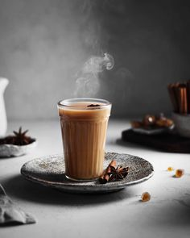

BLACK-COFFEE
Ingredients
- COFFEE
- MILK
- WATER
Recipe
- Heat fresh, filtered water until it reaches about 200°F (just below boiling).
- Measure 1-2 tablespoons of ground coffee per 6 ounces of water, depending on your desired strength.
- Use a coffee maker, French press, or pour-over method to brew. Ensure the coffee grounds and water are in contact for about 4 minutes for optimal extraction.
- Pour the freshly brewed coffee into a mug. Serve hot and savor the rich, bold flavor without additives.

TEA
Ingredients
- TEA LEAF
- MILK
- SUGAR
Recipe
- Heat fresh water in a kettle until it reaches a rolling boil (about 212°F or 100°C).
- Place 1 teaspoon of loose tea leaves or 1 tea bag per cup into your teapot or mug.
- Pour the hot water over the tea leaves or bag. Let it steep for 3-5 minutes, depending on the type of tea and desired strength.
- Remove the tea leaves or bag. Serve plain, or add sugar, honey, milk, or lemon as per your preference.
